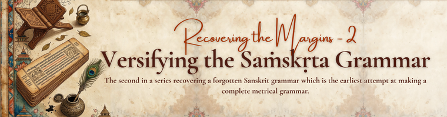

Versifying the Sanskrit Grammar
Vyom A. Shah (✉) | October 5, 2026
Introduction
The grammatical landscape of the Indian subcontinent in the 11th century CE stood at an interesting crossroads, with newer schools of grammar emerging and strengthening over time. In the first centuries of the Common Era, Śarvavarman composed the Kātantra. In the fifth century, Candragomin propounded the Cāndra school, which attained an influential position in Indian linguistic thought. This was followed by Pūjyapāda alias Devanandī’s near-contemporary composition of the Jainendra Vyākaraṇa. While the former attempted to recast sūtras of Pāṇini for ease of pronunciation and to create a school of grammar free from Brahmanical elements for the benefit of the Saṁgha, the latter attempted to make the grammar more concise by using more arbitrary terms (or making the saṁjñās more algebraic), condensing vārtikas and serving the community as Candragomin did. Though the composition of Candragomin’s own commentary is contested, it attests to early attempts at making an independent grammar. Durgasiṁha is credited with the exposition of Kātantra in the seventh century. The ninth century witnessed the composition of the Śabdānuśāsana (popularly known as Śākaṭāyana Vyākaraṇa) by Pālyakīrti alias Śākaṭāyana, a contemporary of Amoghavarṣa, complemented with an auto-commentary called Amoghavṛtti, modelled on Kāśikā and allied texts like nyāsa, dhātupāṭha, et al. According to Kielhorn, this text holds an important place in Indian grammatical tradition. It not only brought about an innovation in the system of anubandha/pratyāhāra but also had a section of paribhāṣa (aphorisms) within the grammar and was complemented with nyāsa (largely inspired by Jinendrabuddhi’s Kāśikā Vivaraṇa Pañjikā).
On the Pāṇinian tradition’s side, we trace a near-perennial flow of exegetical texts explaining the sūtras, starting from the authors of vārtikas like Kātyāyana, Sunāga, Vāḍava, etc., and Patañjali as the author of Mahābhāṣya, which was later commented upon by Bhartṛhari, Kaiyaṭa, and others. Unfortunately, no commentaries from the era between Patañjali and Bhartṛhari have survived today, but Mimansak, in his excellent work on the history of Sanskrit Grammar, traces the texts known through other evidence. The sixth century witnessed the composition of Vākyapadīya by Bhartṛhari, marking a crossroad in the integrating grammar and philosophy. The seventh century is marked as an important phase in the Pāṇinian tradition with the composition of Kāśikā by Vāmana and Jayāditya. It is the earliest surviving commentary on the complete Aṣṭādhyāyī and includes a gaṇapāṭha. Moreover, it stands out as a unique commentary in the trimuni tradition owing to its non-affiliation with Patañjali’s Mahābhāṣya and records the influence of non-Pāṇinian grammatical schools including Cāndra. Jinendrabuddhi composed a nyāsa/vivaraṇapañjikā on Kāśikā in the 8th century.
Towards attempting to bring an innovation in composition, we have the Pañcagranthī Vyākaraṇa composed by Buddhisāgarasūri.
Background of Buddhisāgara
Born as brothers to Kṛṣṇa, a Brāhmaṇa hailing from central India and later initiated into the Jaina order by Vardhamānasūri, Jineśvarasūri & Buddhisāgarasūri were two learned Jaina monks. Jineśvarasūri is credited with the composition of Pramālakṣma (the characteristic of valid cognition), while Buddhisāgarasūri is credited with the composition of Śabdalakṣma (the characteristic of word).
Genesis of the Text
Buddhisāgarasūri, in the praśasti verses of the text, doesn’t provide any specific motive behind the composition of this text. However, Jineśvarasūri, in the concluding verses of his Pramālakṣma, mentions an anecdote. He says that they were asked by the critics that they (Jainas, or perhaps specifically Śvetāmbara Jainas?) did not have their independent works on Logic and Grammar and heavily rely on others’ texts. Over the course, Buddhisāgarasūri composed a work on Grammar – Pañcagranthī (also known as Buddhisāgara Vyākaraṇa and Śabdalakṣma) and Jineśvarasūri himself composed a Pramālakṣma (also sometimes referred to as Pramālakṣaṇa) supplemented with an auto-commentary. In his auto-commentary on Pramālakṣaṇa, Jineśvarasūri adds that Buddhisāgarasūri consulted the works of Pāṇini, Candragomin, Devanandin, Viśrāntavidyādhara (perhaps Vāmana’s Viśrāntavidyādhara?; the school is quoted in Hemacandra’s Śabdārṇava), Durgasiṁha (his commentary on Kātantra) and composed his complete grammar in metre.
Structure of the Text
Completed in 1080 VS (~1023 CE), Pañcagranthī is divided into four chapters (adhyāya) and is as large as seven thousand verses, as mentioned in the praśasti of the commentary. Each chapter (adhyāya) is further divided into four sections (pādas), except the fourth chapter, which concludes the grammar in the second section (pāda).
Since the text is primarily metrical, it contains 207 primary verses consisting of 1922 sūtras (when broken up).
| Adhyāya | Pāda | No. of Verses | No. of Sūtras |
|---|---|---|---|
| I | i | 17 | 151 |
| I | ii | 23 | 248 |
| I | iii | 7 | 56 |
| I | iv | 13 | 96 |
| First Adhyāya — Total | 60 | 551 | |
| II | i | 7 | 80 |
| II | ii | 8 | 62 |
| II | iii | 17 | 147 |
| II | iv | 12 | 97 |
| Second Adhyāya — Total | 44 | 386 | |
| III | i | 14 | 129 |
| III | ii | 15 | 126 |
| III | iii | 13 | 88 |
| III | iv | 22 | 250 |
| Third Adhyāya — Total | 64 | 593 | |
| IV | i | 23 | 210 |
| IV | ii | 16 | 182 |
| Fourth Adhyāya — Total | 39 | 392 | |
| Grand Total | 207 | 1922 | |
As Jineśvarasūri mentions, the grammar also contains the gaṇapāṭha, dhātupāṭha, liṅgānuśāsana and uṇādigaṇapāṭha – all metrical. The gaṇapāṭha is included within the related sūtras. The dhātupāṭha is in the auto-commentary of 3.4.2.1 “bhvāder ivetaḥ”. The list of 1958 dhātus runs for 131 verses, and their meanings are discussed in the following commentary. Just like the Kātantra/Kāśakṛtsna style, Buddhisāgara too combines the adādi and hvādi owing to the similar characteristic. The liṅgānuśāsana is incorporated in the commentary of 1.2.1.1 “hrasvo napaḥ”. The uṇādipāṭha is recorded in 4.1.3.4 “ityuṇādayaḥ”.
Since the author has included all the five “limbs” of a grammar within itself, it is termed as Pañcagranthī. Along with the commentary, the text is roughly seven-thousand verses in length. Jineśvarasūri mentions that the text is planned in two parts: one dealing with Saṁskṛta and the other dealing with Prākṛta. However, all the reported manuscripts only contain the section pertaining to the grammar of Saṁskṛta and not that of the Prākṛta. Even the colophon towards the end of the second section (pāda) of the fourth chapter (adhyāya) presents the conclusion of the text. Nothing about the existence of the Prākṛta part can be concluded with certainty. Kansara, in his introduction to the edition, states “The concluding praśasti verses definitely point to the fact that actually the author did not go further and he concluded the work with the end of the Fourteenth Pada”.
Improvements from the Earlier Models
As clarified by Jineśvarasūri, the grammar has been made after consulting the available literature. Buddhisāgara’s main innovation is composition in metrical style, which would make it easy to memorize to learners. Over this, he also brought about a novelty in pratyāhāra. Over the Pāṇinian Śivasūtras, he followed the longer recension of Jainendra to include visarga, jihvāmūlīya, upadhmānīya and anusvāra in the śivasūtra. He has combined ‘hayavaraṭ’ and ‘laṇ’ as well as ‘jabhañ’ and ‘ghaḍhadhaś’, resulting in 12 śivasūtras/pratyāhāras. On adopting “śivasūtras”, he states:
अचालिताः प्रतीतार्थाः प्रत्याहाराश्चिरन्तनाः।
कृताः पद्या न चामीषामसन्देहार्थं तथा च ते॥
“The pratyāhāras remain unchanged, their meanings already well-understood, and they have existed since ancient times. They have not been rendered into verse, so as to avoid confusion.”
The pratyāhāras are as follows:
अइउण्। ऋऌक्। एओङ्। ऐऔच्। हरवरलण्। ञमङणनम्। झभघढधष्। जबगडदश्। खफछठथचटतव्। कपय्। शषसअंअःᳲकᳳपर्। हल्।
The commentary, then, goes on to enumerate the 36 combinations.
Conclusion
Though the Pañcagranthī may not have enjoyed the central place in the history of Indian grammatical literature, it surely celebrates its status as an innovative grammar which could have been easier to remember than the general ones. Moreover, it also records the beliefs of various schools of grammar like Cāndra, Jainendra, and alike which presents a vivid landscape of the linguistic thought in the pre-11th century medieval India. Buddhisāgara, for his Liṅgānuśasana, has also been quoted by Hemacandrasūri in his lexicon – Abhidhānacintāmaṇi. Unfortunately, after the landmark composition of Siddhahemaśabdānuśāsana by Hemacandrasūri in the 12th century and the royal patronage it received, the glory of both Śākaṭāyana and Pañcagranthī started to fade.
Publication Information
The text was edited with a detailed introduction and various appendices by Dr. N. M. Kansara and published by B. L. Institute of Indology in 2005.
Bibliography:
- Buddhisāgara, Sūri. 2005. Pañcagranthī Vyākaraṇa. 1st edn. Edited by N. M. Kansara. B. L. Series 18. Delhi: B. L. Institute of Indology.
- Mimansak, Yudhishthir. 1984. संस्कृत व्याकरणशास्त्र का इतिहास. 4th edn. Vol. 1. Yudhishthir Mimansak.
- Haag, Pascale, and Vincenzo Vergiani, eds. Studies in the Kāśikāvṛtti : The Section on Pratyāhāras : Critical Edition, Translation and Other Contributions. 1st ed. London: Anthem Press, 2011.
- PrabhācandraSūri, and Hirānanda Em Śarmaśāstrī. Prabhāvakacaritam. Bombay: Niraya-sâgar Press, 1909.
Post Scriptum:
An illustration of the style of the grammar (3.1.6):
क्रीताप्तसंभूतकृता अभिज्ञः साधूप्तपुष्प्यत्त्विह पच्यमानम् ।
कालादृणं देयमृणन्मृगस्तु भक्ताण्ण साधुर्ण्यण पर्षदो यक् ॥३।१।६॥ इन्द्रवज्रा ॥
(४३) क्रीताप्तसम्भूतकृता अभिज्ञः । [३।१।६। १। ] ङ्यन्ताद् यथाविध्यण्घादी स्तः क्रीत्याद्यर्थे। स्रुघ्ने क्रीतः लब्धः संभवति कृतः कुशलो वा स्रौघ्नः। [माथुरः। नादेयः।] राष्ट्रियः। [पारीणः।]
(४४) साधूप्तपुष्प्यत्विहपच्यमानं कालात् । [३।१।६।२। ] कालवाचिनः अण्घादी स्तः साध्वादौ। हेमन्ते साधु: हैमन्त:, हैमनो वा प्रावारः। शैशिरमनुलेपनम् । हेमन्ते उप्यन्ते [हैमन्ताः] हैमनाः [वा] यवाः। ग्रैष्माः शालयः। वसन्ते पुष्यन्ति वासन्त्यः कुन्दलताः। ग्रैष्म्यः पाटलाः। शरदि पच्यन्ते शारदाः शालयः। ग्रैष्मा यवाः॥
(४५) ऋणं देयम्। [३।१।६। ३।] ङ्यन्तकालाद् यथाविध्यण्घादी स्तः, देयमृणमित्यर्थे। मासे देयं मासिकम्। सांवत्सरिकम्। ऋणं किम्? मासे देया भिक्षा॥
( ४६ ) ऋणन्मृगस्तु। [३। १। ६।४। ] ङ्यन्तकालाद्यथाविधि तौ स्त ऋणन्निति व्याहरति मृग इत्यर्थे। निशायां व्याहरति मृगः नैशः, नैशिकः। प्रादोषः। प्रादोषिकः। [मृगः] किम्? निशायां व्याहरत्युलूकः॥
(४७) भक्ताण्ण साधुः। [३।१।६।५।] भक्ते साधुरित्यर्थे णः स्यात्। भक्ताः शालयः। तण्डुलाः साधुर्योग्यः प्रवीणो वा॥
(४८) ण्यण पर्षदः। [३।१।६।६।] सः साधुत्रेत्यर्थे। पार्षद्यः। पार्षदः॥
(४९) यक्। [३।१।६।७।] ङ्यन्तात् साधुरित्यर्थे [य] स्यात् । कर्मणि साधुः कर्मण्यः। शरण्यः। वे[मन्यः]। सामन्यः। पित्र्यः। कित् ऋञर्थः॥६॥
Up next: a blog on other attempts at versifying Sanskrit grammars, and how far they succeed in making grammar easier to understand.